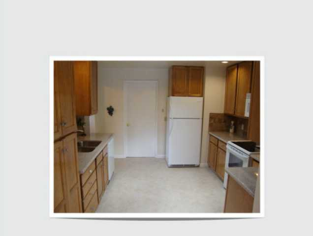
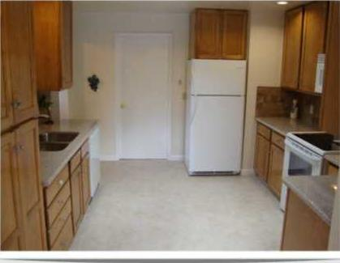

pillow模块
1 简介
pillow模块的前身是PIL模块，其有更好的github和pypi支持，所以简单的安装就可以通过pip命令安装之即可。不过pillow模块对于某些特殊格式的图片处理支持可能依赖于系统的一些额外的图形处理模块，比如libjpeg，libtiff等。可能你的系统已经安装了，也可能没有，根据具体情况来，这里就不一一讨论了。
安装官方文档的叙述1，下面这些可能需要装上。
sudo apt-get install python3-dev python3-setuptools
sudo apt-get install libtiff4-dev libjpeg8-dev zlib1g-dev \
libfreetype6-dev liblcms2-dev libwebp-dev tcl8.5-dev tk8.5-dev
1.1 测试安装情况
可以如下找个图片简单测试一下安装情况:
from PIL import Image
img = Image.open("test.jpg")
print(img.format, img.size , img.mode)
img.show()
pillow模块在这里名字叫PIL是因为它的父亲是PIL，pillow fork自它，并setuptools兼容。
我们看到pillow模块的语法还是很清晰的，Image是个类，open方法返回具体的jpg img 对象，这里就简单称作img对象了，img对象有format, size , mode方法，分别是图片的格式（JPEG），图片的尺寸（(1920, 1080)）和图片的模式（RGB）。然后img对象调用show方法会（通过系统内部工具）显示图片。
open方法就目前按照官方文档的叙述支持如下格式：bmp，eps，gif，im，jpeg，jpeg2000，msp，pcx，png，ppm ，spider，tiff，webp，xbm，xv等。还有一些格式要某只支持读要某只支持写这里不说明了。其中写的时候save方法需要明确说明图片的目标格式，而open方法打开的时候图片名字是随意的，pillow会自动检测图片的格式。
如果open方法图片打开失败，将会返回 IOError 异常。
2 获取图片信息
首先一般是如下引用:
from PIL import Image
然后利用这个Image类的open方法来创建一个图片对象:
im = Image.open('lena.jpg')
然后如下获取图片的格式，尺寸和模式信息。
>>> im.format 'JPEG' >>> im.size (512, 512) >>> im.mode 'RGB' >>>
3 图片格式转换
接触pillow模块的第一个应用就是图片格式转换，请看下面我写的两个函数，都是利用的pillow模块，一个单独转换图片，一个根据文件夹某个后缀文件批量进行格式转换。
from __future__ import print_function
import os.path
from PIL import Image
import subprocess
import logging
logging.basicConfig(level=logging.DEBUG)
def mkdir_p(path):
try:
os.makedirs(path)
except OSError as exc: # Python >2.5
if exc.errno == errno.EEXIST and os.path.isdir(path):
pass
else: raise
def convert_imgformat(inputimg,imgext2,outputdir=''):
'''support convertion:
pillow处理点阵图之间的互换png jpg gif eps tiff bmp ppm
已经加上了输出dir自动支持 。
'''
pillow_support = ['png','jpg','gif','eps','tiff','bmp', 'ppm']
imgname,imgext = os.path.splitext(os.path.basename(inputimg))
#pillow
if imgext[1:] in pillow_support and imgext2 in pillow_support:
outputimg = imgname + '.' + imgext2
try:
im = Image.open(os.path.abspath(inputimg))
logging.info(os.path.abspath(inputimg))
if not os.path.exists(os.path.abspath(outputdir)):
mkdir_p(outputdir)
outputimg = os.path.join(os.path.abspath(outputdir),outputimg)
logging.info(outputimg)
im.save(outputimg)
except IOError:
logging.error('IOError, I can not convert {}'.format(inputimg))
else:
logging.warning('pillow doesnot support the output format {}'.format(imgext2))
def batch_convert_imgformat(inputext,outputext,inputdir='',outputdir=''):
'''转换图片格式函数的批量封装，加上了目标图片dir和输出图片dir，默认是当前目录
然后第一个参数改成了inputext，也就是目标文件夹只有该输入图片格式才会被转换。'''
import glob
inputdir = os.path.abspath(inputdir)
inputimgs = glob.glob(os.path.join(inputdir,'*.'+inputext))
for inputimg in inputimgs:
convert_imgformat(inputimg,outputext,outputdir=outputdir)
4 图片缩小尺寸
仿照上面的api我们写两个函数吧: resize_img 和 batch_resize_img 。
def resize_img(inputimg,outputsize,outputdir='',outputname=''):
'''outputsize parameter is like (120,100) width=120,height=100
resize是保留图片原宽高比的情况下，目标图片宽度或高度不小于指定值
已经加上了输出dir自动支持 。
如果不指定输出文件名，那么默认是 原文件名_width*height.原扩展名
'''
imgname,imgext = os.path.splitext(os.path.basename(inputimg))
try:
im = Image.open(os.path.abspath(inputimg))
im.thumbnail(outputsize)
logging.info(os.path.abspath(inputimg))
if not os.path.exists(os.path.abspath(outputdir)):
mkdir_p(outputdir)
if not outputname:
outputname = imgname + '_{}*{}'.format(im.size[0],im.size[1]) + imgext
outputimg = os.path.join(os.path.abspath(outputdir),outputname)
logging.info(outputimg)
####
im.save(outputimg)
except IOError:
logging.error('IOError, I can not resize {}'.format(inputimg))
resize_img("lena.jpg",(300,200),outputdir="out")
def batch_resize_img(inputext,outputsize,inputdir='',outputdir=''):
'''缩小图片尺寸的批量封装，加上了目标图片dir和输出图片dir，默认是当前目录
然后第一个参数改成了inputext，也就是目标文件夹只有该输入图片格式才会被转换。'''
import glob
inputdir = os.path.abspath(inputdir)
inputimgs = glob.glob(os.path.join(inputdir,'*.'+inputext))
for inputimg in inputimgs:
resize_img(inputimg,outputsize,outputdir=outputdir)
5 图片去背景边
本小节主要参考 这个网页 。然后我们稍作封装即可。
from PIL import ImageChops
def trim_img(inputimg,outputdir='',outputname=''):
'''图片去白边（背景白，如果背景黑也可）
输出名字默认 原名_trim.原后缀
'''
imgname,imgext = os.path.splitext(os.path.basename(inputimg))
try:
im = Image.open(os.path.abspath(inputimg))
bg = Image.new(im.mode, im.size, im.getpixel((0,0)))
diff = ImageChops.difference(im, bg)
diff = ImageChops.add(diff, diff, 2.0, -100)
bbox = diff.getbbox()###
new_im = im.crop(bbox)
logging.info(os.path.abspath(inputimg))
if not os.path.exists(os.path.abspath(outputdir)):
mkdir_p(outputdir)
if not outputname:
outputname = imgname + '_trim' + imgext
outputimg = os.path.join(os.path.abspath(outputdir),outputname)
logging.info(outputimg)
####
new_im.save(outputimg)
except IOError:
logging.error('IOError, I can not trim {}'.format(inputimg))
def batch_trim_img(inputext,inputdir='',outputdir=''):
'''批量图片去边'''
import glob
inputdir = os.path.abspath(inputdir)
inputimgs = glob.glob(os.path.join(inputdir,'*.'+inputext))
for inputimg in inputimgs:
trim_img(inputimg,outputdir=outputdir)
这个算法最核心的语句是:
bg = Image.new(im.mode, im.size, im.getpixel((0,0))) diff = ImageChops.difference(im, bg) diff = ImageChops.add(diff, diff, 2.0, -100) bbox = diff.getbbox() new_im = im.crop(bbox)
其中
bg = Image.new(im.mode, im.size, im.getpixel((0,0)))
这一句看得出来是新建一个图片对象，这个图片对象可以看作纯色背景图片，最后的参数是color，其是用 im.getpixel 来去原图片(0,0)的这个像素点的颜色，也就是最左边最顶上的那个点。
diff = ImageChops.difference(im, bg)
这一句，按照官方文档的描述， PIL.ImageChops.difference(image1, image2) 相当于对图片每个像素点逐个进行如下算术运算:
$$ out = abs(image1 - image2) $$
然后
diff = ImageChops.add(diff, diff, 2.0, -100)
按照官方文档的描述， PIL.ImageChops.add(image1, image2, scale=1.0, offset=0) 相当于对图片每个像素点做如下算术运算:
$$ out = ((image1 + image2) / scale + offset) $$
到这里我们看到diff这个图片对象实际上是原图片减去背景，然后双倍重叠在除以2。这些操作我们都可以看作让四周背景边框更加的趋于0。然后offset设为100，这是我最有疑问的地方，一，像素值变为负值会如何？二，为什么是减去100，有什么特殊的理由吗？
bbox = diff.getbbox() new_im = im.crop(bbox)
接下来实际上还好理解了，首先通过Image对象的 getbbox 方法来获得一个矩形边框值（其由left，upper，right，lower四个像素点坐标组成）。具体内部算法是根据非0的值来计算图形的边界。这个里面的算法可能还很复杂吧。
然后就是调用Image对象的 crop 方法执行裁剪操作，其接受的也是一个矩形边框值，所以可以直接使用上面获得的边框来获得一个新的图形对象。
具体裁剪效果如下所示:

然后去边裁剪之后的效果为:

6 附录
6.1 有名的lena图
还有福利图。。